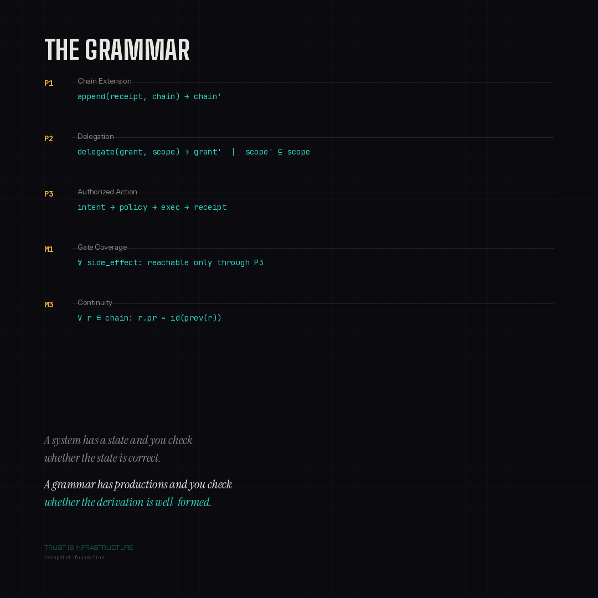
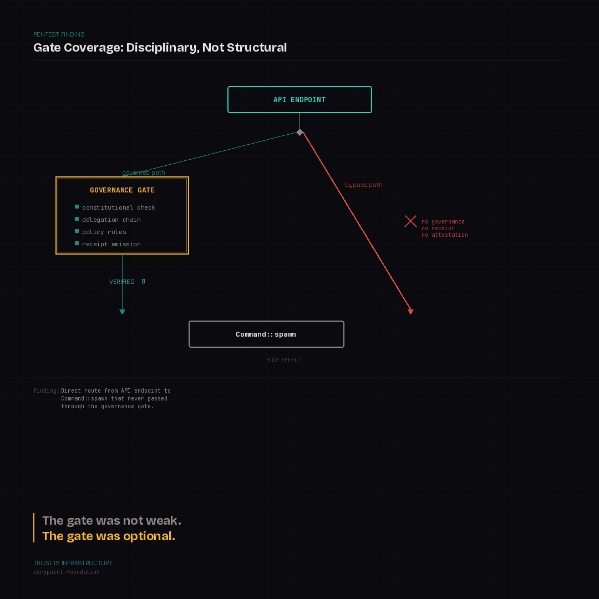
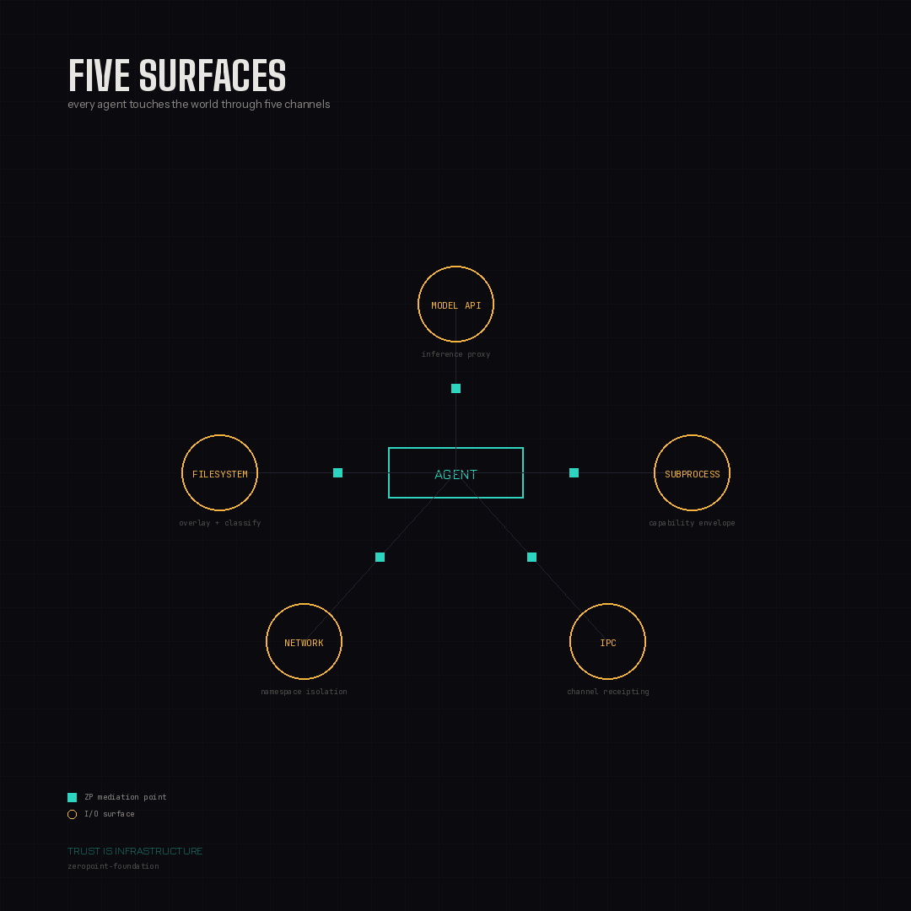

There is a question that the AI industry is not asking clearly enough, and the answer is going to matter more than any model benchmark, any agent framework, or any alignment paper published this year.
The question is: when an autonomous AI agent acts in the world — writes code, manages files, browses the web, spawns subprocesses, accumulates memory, and learns new skills over days and weeks — how do you know what it did, why it did it, and whether it had the authority to do it?
Not "how do you hope." Not "how do you check after the fact." How do you know, with the same structural certainty that a TLS certificate gives you about the identity of a web server?
The honest answer, today, is: you don't. And the agent frameworks are getting more capable faster than the governance infrastructure is getting more real.
The Guardrails Illusion
The current approach to AI governance is policy layers. Guardrails. Content filters. System prompts that say "don't do bad things." Compliance dashboards that report what the model said it did.
All of these share a structural flaw: they depend on the agent's cooperation.
A policy layer that the agent's code path can bypass is not a policy layer. It's a suggestion. A content filter that operates on the output but not the reasoning chain is a checkpoint, not a boundary. A compliance dashboard that reads the agent's self-report is an honor system.
I don't say this to criticize the people building these tools. They're solving real problems under real constraints. But the architecture is wrong. It's wrong the same way that application-level security was wrong before operating systems enforced process isolation. You can write all the access-control code you want inside your application. If the kernel doesn't enforce it, a sufficiently motivated process walks right past it.
We learned this lesson forty years ago in systems programming. We are about to relearn it with autonomous agents.
Governance as Grammar

ZeroPoint starts from a different premise: trust is not a policy. Trust is a grammar.
A system has a state and you check whether the state is correct. A grammar has productions and you check whether the derivation is well-formed. The difference matters because a grammar is open — it accepts new well-formed strings indefinitely, and its correctness is a property of the parse, not of any single moment.
In ZeroPoint, every action an agent takes is a step in a hash-linked, signed, replayable derivation. Each step is conditioned on the full prior context — not just the last action, but the entire chain of actions that preceded it. The derivation is well-formed if and only if it parses against a fixed grammar of constitutional, delegation, and continuity invariants.
What does that mean in practice?
It means that when an agent writes to memory, that write is classified, policy-gated, and receipted before it touches persistent storage. It means that when an agent proposes a new skill, that skill enters quarantine — it does not become trusted because it worked once. It means that when an agent spawns a subprocess, that subprocess runs inside a controlled namespace where the only way to reach the outside world is through host functions that ZeroPoint explicitly exposes.
Verification, in this model, is not checking. It is re-derivation. The verifier walks the full chain from genesis and asks: can I reproduce this state from the grammar's productions? If yes, accept. If no, reject. The verifier is a parser.
This is not a metaphor. It is the actual architecture. 22 Rust crates. 700+ tests. Running code.
What a Pentest Taught Me About Architecture

Earlier this year, I ran a black-box penetration test against ZeroPoint using an autonomous adversarial agent. The agent found 20 vulnerabilities across four categories. One of them was a shell injection in the command execution path. That was bad.
But the structural finding was bigger than any single vulnerability. What the pentest revealed was that gate coverage was disciplinary, not structural. The governance engine — the policy rules, the constitutional checks, the delegation chains — all of it existed and all of it worked when it was consulted. The problem was that not every code path consulted it. There was a direct route from an API endpoint to Command::spawn that never passed through the gate.
The gate was not weak. The gate was optional.
That distinction changed how I think about everything. It is the difference between a security guard and a locked door. A security guard works when the guard is present, awake, and incorruptible. A locked door works because the door is the only path and the lock is the mechanism. You don't need to trust the door's intentions.
The fix is not "be more careful about calling the gate." The fix is to make the gate the only path — structurally, at the type level, so that a code path that bypasses governance is not just wrong but unrepresentable.
The Agent Problem

This matters now — not in some theoretical future — because the agent frameworks have already crossed the threshold into persistent autonomy.
Hermes Agent, from Nous Research, has over 106,000 GitHub stars. It runs 24/7 on a VPS. It accumulates persistent memory across sessions. It learns new skills from experience and stores them for reuse. It spawns browser automation sessions that can self-heal when the DOM changes. It creates child agent instances for parallel work.
This is not a chatbot. This is a durable autonomous actor. And it is not the exception — it is where the entire ecosystem is heading. Claude Code, Cursor, Devin, Codex — they all have the same surfaces: filesystem, network, subprocess, model API, inter-process communication. The capability set has converged. The governance has not.
The governance gap is specific and measurable:
- Memory writes are not policy-gated. An agent can silently promote speculation into trusted fact.
- Skill creation is not verified. A learned behavior becomes trusted because it worked once.
- Browser actions are not bounded. Self-healing execution can extend the operational surface mid-task.
- Subprocess spawning is not receipted. Parallel workers can act without attestation.
Each of these individually is a manageable risk. Together, compounding over time in a persistent agent that runs unsupervised, they constitute a category of system that we do not yet have the infrastructure to govern.
ZeroPoint is that infrastructure.
What ZeroPoint Actually Is
ZeroPoint is an autorecursive trust substrate. Each word is load-bearing.
Autorecursive means each step is conditioned on the full prior context. Not just the last action — the entire history. The chain is not a log; it is the state. The present compresses the past. This is the same principle that makes autoregressive language models work: each token is conditioned on all prior tokens. It is also, I believe, a more fundamental computational principle than its current use in language modeling suggests — but that is a longer conversation for a future post.
Trust means the system's guarantees are structural, not contractual. You do not trust the agent to honor its commitments. You trust the namespace that makes violation unrepresentable. You do not trust the channel. You trust the math.
Substrate means this is not an application. It is not a guardrail. It is the layer that lives below the application and refuses to be bypassed. Applications are built on top of it. Governance is the foundation, not the fence.
It is not finished. Two of the four core claims I make about it are not yet true in the running code. I know which two, I know why, and I know the path to making them true. That honesty is part of the project.
Why I'm Writing This
I have been building ZeroPoint in near-complete isolation. The architecture documents are hundreds of pages. The codebase is tens of thousands of lines. The thinking has evolved through dozens of iterations, each conditioned on what the prior iteration revealed. And almost none of it is visible to anyone outside my own terminal.
That changes now.
I'm not writing this because I have a product to launch. I'm writing it because the problem ZeroPoint addresses — how do you make autonomous AI systems trustworthy at a structural level — is too important to solve in a cave. The ideas need to be tested against other minds. The architecture needs to be challenged by people who think differently than I do. And the story of building it — the breakthroughs, the mistakes, the moments where the thinking pivoted — is itself a contribution, because there are others out there trying to solve the same problem and they deserve to see someone else's working notes.
I'm Ken Romero, founder of ThinkStream Labs. ZeroPoint is open-source and under active development. If you're interested in agent governance, trust infrastructure, or the intersection of cryptography and AI safety, follow along. The next post is about where these ideas come from — the intellectual lineage that converged into a trust grammar.